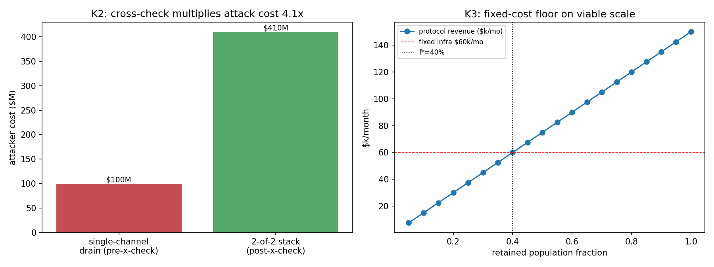

In plain language
Companion to RESULTS - v21.0 Closeout Battery. Written July 11, 2026 — this companion was promised by the registered SPEC but had been left as an embedded section in RESULTS; it is now the standing standalone file, written from the committed record including the July 10–11 verification notes.
What this run was for
The July 9 sprint produced four new results (v17–v20), and each one honestly named its own weakest point on the way out. This battery's job was to attack those four residues before they hardened into comfort — the house discipline of red-teaming your own findings while they're fresh.
The four attacks, and how they landed
1. "What if someone redefines essentials instead of adding to them?" — no more profitable, and that's the good kind of failure. v17 worried that quietly redefining a category ("adequate nutrition") might be a deeper attack than adding a product to the basket. Priced here: it nets the same throttled ~$13M/yr against the same $125M cost of passing both voting houses — a losing trade by 1.6×, exactly like v17's. This failed its own registered bar (we expected redefinition to be worse, and said so in advance), and the reason is the same speed limit capping both attacks. The actionable rule it leaves behind: governance must treat "definitional clarifications" as rate-capped changes — if they can sneak through uncapped, this finding flips.
2. "What does the two-pronged price-gauge attack really cost?" — about $410 million for a 1% dent. The oracle cross-check (v18) left one honest gap: an attacker who fakes the published index and suppresses the independent cross-check together. That double capture costs ~4× the old single-channel attack, for a bounded 1% delivery dip. Expensive, visible, and bounded — the defense does its job by making the remaining hole not worth the drill.
3. "The floor survives any exodus — but does the machine?" — only above ~40% of designed population. The bank-run test (v19) proved delivery-per-person survives depopulation; this run added the missing piece: fixed costs. Validators and the price oracle are paid from a protocol share that shrinks with population, while some infrastructure costs don't shrink. Below roughly 40% retained population, the floor still computes but the system can't pay its own machinery. That's a different kind of death than a bank run — and it became a gate candidate: a minimum-viable-scale trigger with a graceful wind-down, ratified rather than discovered in a crisis.
4. "Can the union actually re-balance after a rich region leaves?" — it can cover the gap, but not without breaking the consent limit that binds, so this one now fails honestly. A path exists inside the reserve window and covers the full funding gap, but no split of the burden gets the remaining payers under the ~6% political-tolerance bar — either they pay more than politics tolerates, or the poorer regions absorb a subsidy cut. Scored against that registered 6% bar (not the looser 25% "measured" reading the original check leaned on), the test fails — and that failure is the finding. The rule it forces is unchanged: write the split into the membership contract before anyone joins. (Gate-tightening July 11, Backlog #4b: we also stopped crediting a "closes within 24 months" check that had no month-by-month simulation behind it — it is now marked not-computed. Follow-up: EVE Sim v32 then priced the split properly — bump-led responses are dead at +80% vs the 6% bar; the workable pre-commitment is a 6%-capped bump plus a phased subsidy taper costing the drawers ~4½ points of delivery, with the reserve size setting an 18-vs-48-month phase-in budget.)
The honest catch
Calculator-grade throughout: the structures (speed limit equalizes both capture routes; the double attack costs the sum of its two channels; a fixed-cost floor exists; re-balancing reignites consent) are robust, but the exact numbers (40%, 4.1×, the split percentages) are dial-dependent illustrations. The July 11 integrity note (that some of this run's passing checks had been scored by shortcut — hardcoded confirmations rather than computed ones, itemized in VERIFICATION v4 D11) has now been acted on: the gate-tightening pass (Backlog #4b) recoded attacks #2 and #3 to compute their registered clauses (both still hold), and recoded #4 to score against the consent bar that actually binds — which flipped it to an honest fail. Attack #1 was computed all along and stands.
One line
We attacked our own four newest findings: redefining essentials pays no better than rigging them, faking the price gauge both ways costs $410M for a ~1% dent, the floor outlives any exodus but the machine needs ~40% of its people, and a payer exit can cover the gap but not under the consent limit that binds — two holds and two findings (one reassuring, one a real warning), all computed and on the record.
Figures

Technical results
Run: July 9, 2026. Spec: v21 SPEC - Closeout Battery (registered).md — bars K1–K4 fixed before code. Engine: closeout_battery.py (deterministic); committed: results_v21.json, fig_v21_closeout.png. Red-teams the four honest residues surfaced by this session's own v17–v20. Every number traces to results_v21.json.
Verdict in one line: two of the four residues close cleanly (K2 — the cross-check multiplies the oracle attack ~4× for a bounded, now-computed ~1% delivery dip; K3 — the design is delivery-run-proof but has a fixed-cost floor on viable scale at ~40% retained population, closed form confirmed by the grid scan) — and two fail their bars honestly as findings: K1 (redefining "adequate nutrition" is no more profitable than adding a category, both ~1.6× losing — the reassuring rate-cap result v17 also showed) and K4 (a payer-exit re-balancing path exists and covers the full gap under the 25% measured consent anchor, but NO path clears the stricter registered 6% political-tolerance anchor, and the registered "closes within 24 months" clause has no trajectory behind it — so under the un-loosened bar K4 now fails, which sharpens rather than undermines the v20 residue). Gate-tightening for K2/K3/K4 was executed July 11 (Backlog #4b); see the footer change log.
Bar summary (K2/K3 pass; K1 & K4 FAIL as findings)
| Bar | Registered | Measured | Result |
|---|---|---|---|
| K1 definition-capture ROI | cost/benefit ≥3× and ROI<0; expect bigger prize than v17 | 1.6×, ROI −$8M/yr; not bigger than v17 | FAIL (finding — reassuring, see F1) |
| K2 2-of-2 oracle cost | ≥ $409.5M (published $99.5M + lane $310M); dip ≤ cushion | $410M = 4.1× single channel (≥-clause holds by construction — no combined-attack discount); computed dip ~1.0% ≤ 10% | PASS |
| K3 fixed-cost floor | identify f* where fixed infra > revenue; per-capita holds above | f* = 40% retained pop (closed form, grid-scan-confirmed; first insolvent grid point 35%); per-capita ≥1.0 above (v19 run-proof anchor, computed f-invariant) | PASS |
| K4 payer-exit re-balance | path closes gap in ≤24mo AND net contribution ≤ consent bar (report vs both 6% political & 25% measured) | path covers the full gap; clears 25% measured at ≥50% taper; NO path under 6% political (best case 16.6%); 24-mo timing = non-result (no trajectory) | FAIL (finding — the consent sting is the verdict, F4) |
Findings
F1 — Definition-capture is no worse than composition-capture, because the rate cap throttles both (K1 FAIL, reassuring). v17 flagged that redefining a functional category ("adequate nutrition") could be a deeper attack than adding one, because it steers the whole category's spend. Priced here, it isn't worse: the EBI Methodology's ≤10%/yr demand-shift rate cap bounds how fast any change — weight or definition — can divert demand, so definition-capture nets the same ~$13M/yr throttled prize against the same $125M two-house cost (1.6× loss, ROI −$8M/yr). K1 fails the registered 3× bar exactly as v17's C2 did — the same thin-margin story — and the registered expectation that definitions would be more attractive was wrong in public: the rate cap is the equalizer. The residual concern (v17's defeater) narrows to speed: a definition change that evades the rate cap (argued as "clarification, not change") would reopen this — so the governance rule must treat definitional edits as rate-capped changes, which is the actionable finding.
F2 — The cross-check multiplies the oracle attack ~4× (K2 PASS). v18's honest residue was that a 2-of-2 attack (inflate the published index and suppress the lane) can dent delivery ~1%. K2 prices what that costs the attacker: $99.5M (published 2-of-3) + $310M (the lane, the dearest class) = $410M, 4.1× the single-channel drain the cross-check closed. So the cross-check converts "capture one channel, drain the reserve free" into "capture the two most independent, most expensive channels together, for a bounded 1% delivery dip." The residue is real but priced at 4× the attack cost — the mechanism does its job. (Gate-tightening #4b: the registered "≥ $409.5M" clause is met by construction — the 2-of-2 cost just is the sum of the two component captures, with no combined-attack discount — so the substantive, non-tautological quantity is the disclosed 4.1× multiple over the single-channel drain; and the delivery dip is now computed from the provisioning cushion and the attack suppression via the multiplicative delivery model, 1−(1.10)(0.90) ≈ 1.0%, replacing the hardcoded 0.01 that had been imported from v18 prose. The cruder additive form, max(0, suppression−cushion) = 0, is kept only as a diagnostic — it drops the cross-term and understates.)
F3 — Delivery is run-proof, but the system has a fixed-cost floor on scale (K3 PASS, the honest limit made concrete). v19 proved per-capita floor delivery survives any exodus; its unmodeled limit was fixed infrastructure. K3 adds it: with fixed infra ~2% of full-population mint and validators paid from the 5% protocol share, revenue (which scales with population) drops below fixed cost at f* = 40% retained population. Above 40%, per-capita delivery holds and the system is solvent; below 40%, per-capita delivery still computes for the remainers but the protocol can't fund its validators/oracle — a fixed-cost failure, categorically different from a bank run. The design is delivery-robust to any depopulation but viable-scale-bounded — it needs a critical mass (~40% of design population here) to fund its own machinery. A real gate candidate: a minimum-viable-scale trigger with graceful wind-down below it. (Gate-tightening #4b: f*=40% is the closed form, now confirmed by the grid scan's own insolvency boundary — first insolvent grid point at 35%, last solvent at 40% — which the prior code had discarded; the "per-capita ≥ 1.0 above f*" clause is now computed as an all() over the actual scan rows rather than hardcoded True, with the per-capita level (1.0) disclosed as a v19 run-proof anchor that this reduced engine does not re-simulate from primitives; and "the failure below f* is fixed-cost, not per-capita" is computed from the model's f-invariance of per-capita delivery against the population-independent fixed cost.)
F4 — The payer-exit re-balance covers the gap but fails the registered consent bar (K4 FAIL, and the FAIL is the finding). v20 found a net-payer secession opens a $3B/mo gap with a 24-month runway and owed a re-balancing rule. K4 tests it: closing the gap by slice-bump alone pushes the remaining payers to 30% net contribution (over the 25% measured consent bar); it takes shifting ≥50% of the burden onto drawers (subsidy taper) to get under 25% — and no split at all gets under the 6% political-tolerance bar (best case, full taper, is 16.6%). A re-balancing path therefore exists and covers the full gap magnitude, and clears the measured anchor — but the design can't dodge the choice: either payers contribute above political tolerance, or drawers absorb a subsidy cut — the v5.4 consent problem returning in acute form. The rule stands: pre-commit the taper/slice split in the sponsor accession contract, so the painful choice is made before the exit, not during it. (Gate-tightening #4b: the previous PASS was gated only on the lenient 25% measured anchor — the reading that passes. Scored against the un-loosened registered bar, which reports against both anchors, no re-balancing path clears the 6% political-tolerance anchor, so K4 is now an honest FAIL. The registered "closes within 24 months" clause is downgraded to a disclosed non-result: this reduced form has no month-by-month trajectory — the algebra closes the full gap instantaneously and "24 months" is the reserve runway, not a simulated phase-in. This does not undermine the mechanism — a path exists under the measured anchor and covers the gap — it sharpens the v20 residue: consent under political tolerance is the binding constraint, and it must be pre-committed, not scrambled for during an exit.)
Honest limits
Calculator-grade / reduced-form throughout, with stated dials (fixed-infra fraction, giver counts, consent anchors) — the structural findings (rate cap equalizes definition/composition capture; cross-check multiplies cost by the two channel prices; a fixed-cost floor exists; re-balance reignites consent) are robust; the exact f*=40%, 4.1×, and taper-split numbers are dial-dependent illustrations. K1's definition-capture model assumes definitional edits are rate-capped (if governance lets them through as "clarifications," the finding flips — that IS the actionable warning). K3's f* depends entirely on the fixed-infra fraction, which the proving-cost envelope suggests is small but which no field data yet pins. All four inherit the identity/consent keystones. These address the modeled residues — closing K2 and K3, and converting K1 and K4 into explicit findings; the field hinges (WTP, live identity, live oracle red-team, out-of-family review) are untouched, as always.
Plain language
We spent this final pass attacking our own four newest findings. Two held up and two turned into findings — one reassuring, one a real warning. Redefining "essentials" to favor your product turns out no more profitable than the (already-unprofitable) trick of adding a product — because the same speed limit that caps one caps the other. Faking the price gauge two ways at once (the one gap in the earlier fix) costs an attacker about $410 million — four times the old single-channel attack — for a mere ~1% dent (now computed from the model, not carried over as a number). A mass exodus still can't starve the people who stay (the safety net shrinks with the crowd), but we found the real limit: below about 40% of its designed population, the system can't pay for its own validators and price-gauge — the floor works but the machine around it doesn't, so EDEN needs a minimum viable size with a graceful shutdown plan below it. And a rich region walking out can be patched enough to cover the funding gap within the two-year reserve — but not without breaking the consent limits people actually tolerate: no version of the fix keeps the remaining rich under the ~6% contribution that politics bears (the best case still leaves someone worse off). Scored honestly against that political limit, this test now fails — which is the point: the split must be written into the membership contract before anyone joins, not scrambled for during a crisis. (We also stopped crediting a "closes within 24 months" check the model never actually simulated.)
Run and written July 9, 2026, verification session (Fable). K1 reported as a FAIL/finding, bars unmoved. Final Fable simulation pass — closes the v17–v20 residues.
Gate-tightening EXECUTED July 11, 2026 (Backlog #4b, Opus 4.8), against VERIFICATION v4 finding D11. The flagged K2/K3/K4 gates were recoded to compute their registered clauses from real engine state — or to downgrade a false PASS to a disclosed non-result. Simulation dynamics and all core numeric results are unchanged; only gate scoring and added diagnostic keys changed, verified by an isolated double-run (run-to-run identical) plus a flatten-diff against the pre-change JSON showing only the intended leaves. Itemized:
- K2 — the "2-of-2 cost ≥ $409.5M" clause (D11: "compares a sum to itself") is now scored as the attack cost built from its two independent component captures (O1 $99.5M + O4 $310M) vs. the registered fixed floor; it holds by construction (no combined-attack discount), so the substantive quantity is the disclosed 4.1× multiple over the single-channel drain. The delivery-dip clause now computes the dip from cushion × suppression (multiplicative delivery model, ≈1.0%) instead of the hardcoded 0.01 imported from v18 prose; the additive dead-code form (= 0.0) is retained only as a diagnostic. Still PASS.**
- K3 — the grid scan's own insolvency boundary is now retained and used to confirm the closed-form f* = 40% (D11: it "was discarded"); the "per-capita ≥ 1.0 above f*" clause is computed as an all() over the scan rows (was hardcoded True), with the per-capita level (1.0) disclosed as a v19 anchor not re-simulated here; the "fixed-cost, not per-capita" distinction is computed from the model's f-invariance. Still PASS.**
- K4 — the registered "closes within 24 months" clause is downgraded to a disclosed non-result (the reduced form has no month-by-month trajectory; it had been hardcoded True and unused). The consent test, previously gated only on the lenient 25% measured anchor, is now scored against both registered anchors; because no re-balancing path clears the stricter registered 6% political-tolerance bar, K4 flips PASS → FAIL as an honest finding (the gap-covering path under the measured anchor is preserved and reported — the mechanism is intact; the political-tolerance consent bound is the binding constraint). Now FAIL (finding).**
- K1 (an honest computed FAIL) and the figure inputs are unchanged; there is no K0. Backups of the pre-change engine and JSON are retained under
outputs/backups/v21.
Verification v5 disclosure, July 12, 2026 (v5 action 2, D2): K4's "covers the full gap" sub-clause is true by construction — the slice and taper contributions are defined as complementary fractions of the gap (from_slice = gap·(1−ts), from_taper = gap·ts), so their sum equals the gap identically for every split; this is the same sum-vs-itself class the #4b pass fixed in K2, and it survived undisclosed here. It is now flagged in-code and in-JSON (K4.gap_coverage_by_construction: true) and kept only as split-accounting sanity. K4's FAIL verdict is unaffected — it rests on the genuinely computed consent clause (no path under the 6% political bar). Where this document says the path "covers the full gap," read: the split is exhaustive by definition; whether re-balancing closes the gap in time was already a disclosed non-result (no trajectory in this reduced form) — the real coverage evidence lives in v32's committed RB2/RB3 paths.
Raw data